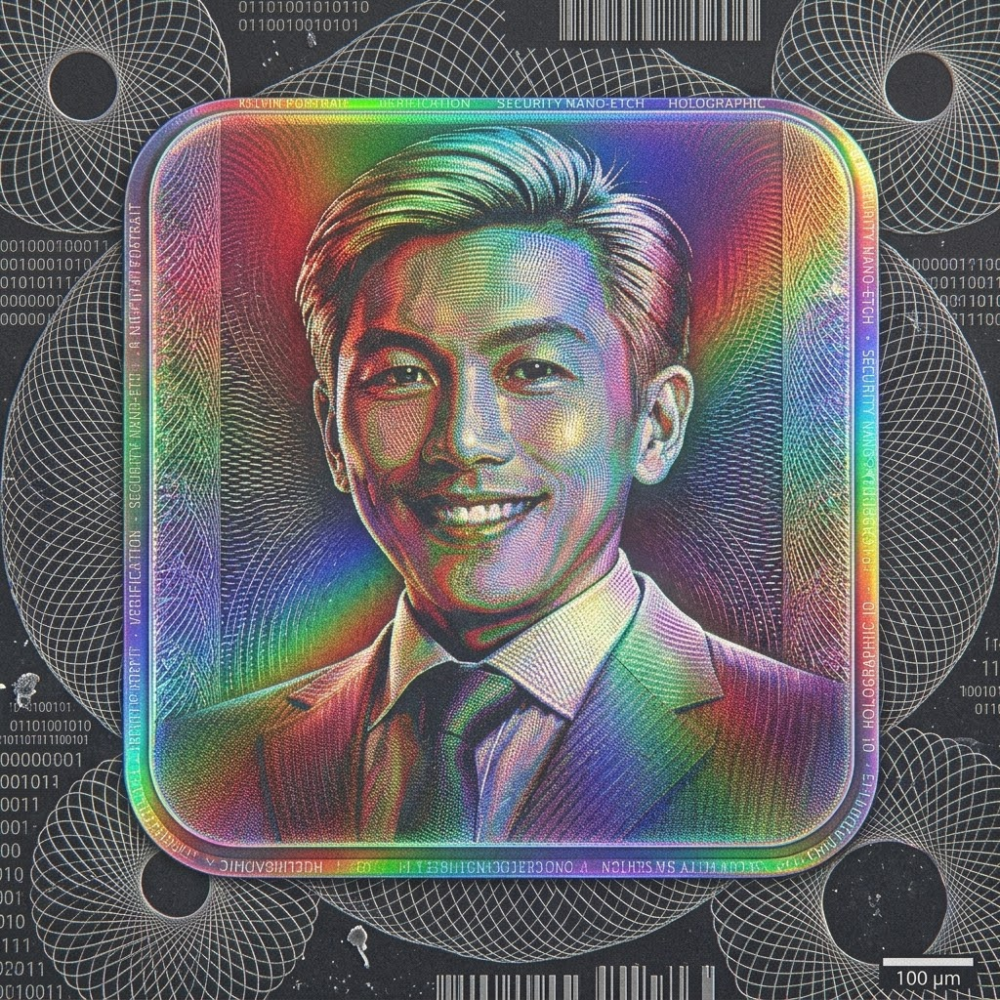

GLOBAL TIME NODES
7 REGIONS
JAKARTA (UTC+7)
00:00
INDIA (IST,
UTC+5:30)
00:00
TOKYO (UTC+9)
00:00
LONDON (UTC+0)
00:00
NEW YORK
(UTC-5)
00:00
SHANGHAI
(UTC+8)
00:00
SYDNEY (UTC+10)
00:00
Temporal
Astrolabe
● TSA ACTIVE ↗
00:00:00
ENDPOINT:
rsa.wongkelvin.com/tsa
BLOCK #00000 | SHA-256 INITIALIZING...
SECURE HANDSHAKE
GATEWAY
● RSA Key Portal
🔒 LOCK_AUTH_01
⚡ 0x8A4F
0x8A4F92B1 • SHA256_RSA4096 • RFC3161_TSA_VERIFIED • X509_PKI_TRUST_CHAIN • 0x8A4F92B1 •
SHA256_RSA4096 • RFC3161_TSA_VERIFIED •
AION_KW_RSA_KEY • TIMESTAMP_AUTHORITY • 0x39FF14_ACTIVE • AION_KW_RSA_KEY • TIMESTAMP_AUTHORITY •
0x39FF14_ACTIVE •
AION TIMESTAMP AUTHORITY
RSA.WONGKELVIN.COM
RFC 3161 PKI Verified Handshake Token
WONG_K_IDENT_8892
PROT: RSA-4096
JUKEBOX REVERB
AUDIO ACTIVE
DSP: STEREO LPCM
24-BIT / 96kHz
60Hz
170Hz
310Hz
600Hz
1kHz
3kHz
12kHz
Ethereal_Waves.wav

KELVIN WONG
Executive - IMI Corporation, K-Works
SG
Volunteer @ K-Works. Passionate about Business, Cryptography, Engineering, AI, and Digital
infrastructure...THE BEST IS YET TO BE ~
CONTACT & RESEARCH
SGP MECHANICAL
POWERED BY RFC 3161

ILLUMINATING // HEART . .
3.0 GJ/s
CORE TEMP: 36.8°C
VOLTAGE: 3.5 kV
CHEST RECTIFIER
STARK-TECH